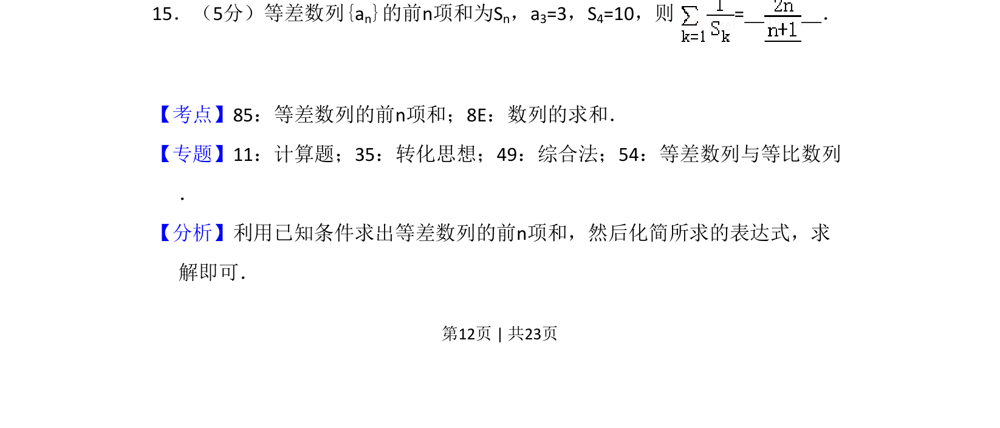
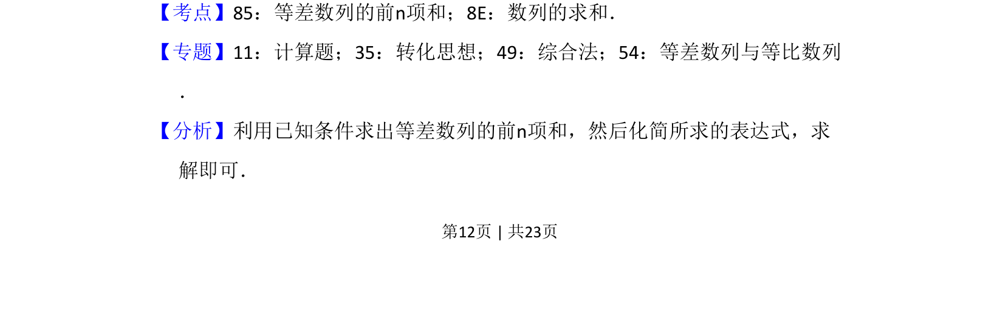
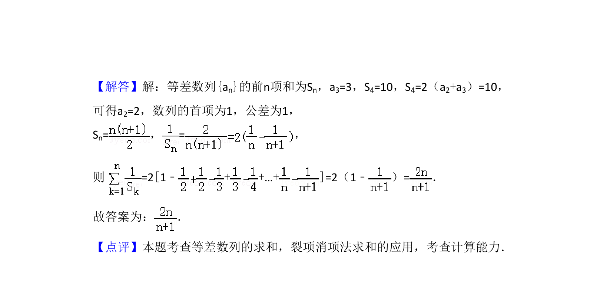

考点：等差数列前n项和 数列求和 等差数列性质

已知等差数列的项与前n项和，求数列求和表达式的值


📄 原 PDF 第 12 页：
素材/真题/吉林/2008-2024·（吉林）数学高考真题/2017年高考数学试卷（理）（新课标Ⅱ）（解析卷）.pdf
15．（5分）等差数列{an}的前n项和为Sn，a3=3，S4=10，则 = ．
【考点】85：等差数列的前n项和；8E：数列的求和．菁优网版权所有 【专题】11：计算题；35：转化思想；49：综合法；54：等差数列与等比数列 ． 【分析】利用已知条件求出等差数列的前n项和，然后化简所求的表达式，求 解即可．